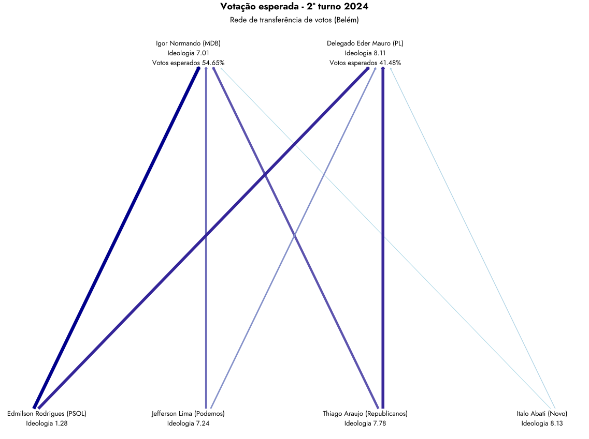

| Resultados previstos pelo modelo de transferência de votos por capital | ||
| Capital | Vencedor | Votos |
|---|---|---|
| Aracaju | Emilia Correa | 58.26% |
| Belo Horizonte | Bruno Engler | 52.29% |
| Belém | Igor Normando | 54.65% |
| Campo Grande | Adriane Lopes | 47.98% |
| Cuiabá | Abilio | 64.24% |
| Curitiba | Eduardo Pimentel | 47.48% |
| Fortaleza | Andre Fernandes | 52.85% |
| João Pessoa | Cicero Lucena | 62.83% |
| Manaus | David Almeida | 47.56% |
| Natal | Paulinho Freire | 55.88% |
| Palmas | Eduardo Siqueira Campos | 51.80% |
| Porto Alegre | Sebastiao Melo | 56.36% |
| Porto Velho | Mariana Carvalho | 54.47% |
| São Paulo | Ricardo Nunes | 53.85% |
A polarização afetiva pode prever resultados eleitorais?
Evidências de um estudo pré-registrado
Recife, 14 de outubro de 2024
1 Introdução
Este artigo apresenta um novo método1 para estimar a transferência de votos em sistemas multipartidários altamente polarizados. O arcabouço teórico se baseia nos argumentos utilizados por Comellas e Torcal (2023), o referido estudo foca nos contextos da Europa do Sul e da América Latina para entender como os vínculos emocionais dos cidadãos com os rótulos políticos de esquerda e direita moldam suas atitudes políticas.
1 Materiais de replicação estão disponíveis em:
Em contornos mais gerais o argumento central dos autores é que a polarização afetiva leva os eleitores a se agruparem em blocos de esquerda e direita, com fortes vínculos emocionais com seu próprio grupo e animosidade em relação ao grupo ideológico oposto. Este fenômeno é proeminente mesmo em sistemas multipartidários onde várias formações políticas operam. Nós consideramos que esta assertiva também é válida para o caso brasileiro (Rennó, 2023), contudo, cabe salientar que a mesma foi desenvolvida originalmente para os casos de Argentina, Chile, Itália, Portugal e Espanha.
O constructo teórico deste trabalho vai assumir que a distância ideológica entre partidos/candidatos afeta decisivamente a transferência de votos entre os candidatos que disputam o segundo turno das eleições municipais no Brasil. Mesmo sendo essa disputa dentro de um mesmo campo ideológico. O desenho de pesquisa utiliza simulação computacional para estimar o fluxo de votos entre o primeiro e o segundo turno das eleições municipais de 2024 em 15 capitais brasileiras.
O restante do artigo está organizado da seguinte forma: a próxima seção discute, rapidamente, os fundamentos teóricos do nosso modelo a partir da literatura sobre polarização afetiva. Depois disso, apresentamos as principais características do desenho de pesquisa com o objetivo de aumentar a transparência e garantir a replicabilidade dos resultados. Na sequência, apresentamos os resultados do modelo. Por economia de espaço, apresentaremos os resultados detalhados apenas para São Paulo. Leitores interessados nos detalhes matemáticos dos modelos devem consultar os anexos.
2 O que você faria se a sua filha se casasse com um bolsonarista/petista?
Essa é uma das perguntas clássicas utilizadas por especialistas2 para mensurar o que hoje entendemos por polarização afetiva.
2 Para mais detalhes sobre a literatura sobre polarização em sistemas multiparidiários, sugerimos: https://www.sciencedirect.com/science/article/pii/S0261379423000379
De acordo com Tajfel e Turner (1979), sob condições de competição de grupo, o senso de pertencimento a um grupo incute avaliações positivas do grupo interno e, correspondentemente, avaliações hostis de grupos externos. No caso do partidarismo, essa divergência no afeto em relação aos partidos de dentro e de fora — polarização afetiva — aumentou substancialmente nas últimas quatro década (Ivengar e Westwood, 2015).
As etiquetas ideológicas de “esquerda” e “direita” desempenham um papel fundamental em diversos sistemas multipartidários, atuando como identificadores de grupos. Esse fenômeno faz com que as pessoas tendam a enxergar os partidos e seus apoiadores dentro de seu próprio espectro ideológico como parte do “nosso grupo”, enquanto os adversários do outro espectro são vistos como “eles” (Druckman e Levendusky, 2019).
De acordo com Vegetti e Širinić (2019), esse cenário intensifica as diferenças entre os adeptos desses dois blocos ideológicos. Essa identificação não apenas segmenta a sociedade, mas também fomenta um tipo de polarização afetiva bipolar em que a animosidade entre os apoiadores da esquerda e da direita se torna cada vez mais pronunciada.
Além disso, a ideologia fundamentada na identidade não necessariamente reflete um conjunto coerente de crenças políticas. Isso significa que os efeitos de polarização podem surgir mesmo entre cidadãos que, em questões chave, adotam posições centristas ou possuem crenças ideologicamente inconsistentes em diferentes temas. Ou seja, a polarização não depende exclusivamente de alinhamentos claros em questões políticas, mas também da forte identificação com um grupo ideológico.
No Brasil, o livro a Biografia do Abismo representa, salvo melhor juízo, a primeira tentativa de divulgar, para o público não acadêmico, esse fenômeno, além de discutir suas possíveis causas e consequências
3 Metodologia
O modelo inicia baseando-se no percentual dos votos válidos que cada candidato em uma das quinze capitais3, que irão ao segundo turno, recebeu. Concorrerão no segundo turno da eleição os dois primeiros colocados no primeiro turno. Espera-se, no entanto, que haja transferência de votos para os candidatos que irão ao segundo turno da eleição de acordo com a posição ideológica do partido ao qual fazem parte. Desse modo, para calcular a transferência de votos a partir da polarização ideológica entre os candidatos, definimos a posição relativa de cada competidor no espectro ideológico em relação ao partido que pertencem. Neste trabalho, reproduzimos a classificação proposta por Bolognesi, Codato e Ribeiro (2023). Os autores estabelecem uma escala de ideologia na qual aos partido de esquerda atribuem-se valores próximos a 0, enquanto aos partido de direita, atribuem-se valores mais próximos a 10. Depois disso, devemos estabelecer a relação teórica de interess Seguindo X, W e Z, nossa hipótese de trabalho sustenta que quanto maior a distância ideológica entre os partidos aos quais seus candidatos pertencem, menor será o potencial de transferência de votos entre eles, conforme ilustra a Figura 1
3 De acordo com o Tribunal Superior Eleitoral (TSE), 15 capitais brasileiras terão segundo turno para o Executivo municipal de 2024. São elas: Aracaju (Sergipe), Belém (Pará), Belo Horizonte (MG), Campo Grande (Mato Grosso do Sul), Cuiabá (Mato Grosso), Curitiba (Paraná), Fortaleza (Ceará), João Pessoa (Paraíba), Manaus (Amazonas), Natal (Rio Grande do Norte), Palmas (Tocantins), Porto Alegre (Rio Grande do Sul), Porto Velho (Rondônia) e São Paulo (São Paulo)
4 Resultados
5 Capitais
5.1 Aracaju

5.2 Belo Horizonte

5.3 Belém

5.4 Campo Grande

6 Apêndice
6.1 Aracaju
| Votação esperada - 2º turno 2024 | ||
| Modelo de transferência de votos (Aracaju) | ||
| Modelo | Luiz Roberto (PDT) | Emilia Correa (PL) |
|---|---|---|
| Simples | 33.89% | 58.26% |
| Potência | 35.72% | 64.28% |
| Exponencial | 33.58% | 58.73% |
| Sigmoide | 34.81% | 58.44% |
| Quadrático | 30.51% | 58.56% |
| Gaussiana | 29.92% | 59.06% |
| Polinomial | 43.14% | 56.86% |
| Gompertz | 43.93% | 56.07% |
| Hiperbólico | 38.52% | 61.48% |
| Fonte: Gauss Analítica | ||
6.2 Belo Horizonte
| Votação esperada - 2º turno 2024 | ||
| Modelo de transferência de votos (Belo Horizonte) | ||
| Modelo | Fuad Noman (PSD) | Bruno Engler (PL) |
|---|---|---|
| Simples | 47.71% | 52.29% |
| Potência | 54.00% | 46.00% |
| Exponencial | 47.74% | 52.26% |
| Sigmoide | 47.43% | 52.57% |
| Quadrático | 47.69% | 52.31% |
| Gaussiana | 47.56% | 52.44% |
| Polinomial | 48.45% | 51.55% |
| Gompertz | 45.50% | 54.50% |
| Hiperbólico | 47.62% | 52.38% |
| Fonte: Gauss Analítica | ||
6.3 Belém
| Votação esperada - 2º turno 2024 | ||
| Modelo de transferência de votos (Belém) | ||
| Modelo | Igor Normando (MDB) | Delegado Eder Mauro (PL) |
|---|---|---|
| Simples | 54.65% | 41.48% |
| Potência | 54.25% | 45.75% |
| Exponencial | 55.06% | 41.82% |
| Sigmoide | 55.36% | 41.96% |
| Quadrático | 54.58% | 41.77% |
| Gaussiana | 55.35% | 42.44% |
| Polinomial | 57.78% | 42.22% |
| Gompertz | 56.25% | 43.75% |
| Hiperbólico | 56.60% | 43.40% |
| Fonte: Gauss Analítica | ||
6.4 Campo Grande
| Votação esperada - 2º turno 2024 | ||
| Modelo de transferência de votos (Campo Grande) | ||
| Modelo | Adriane Lopes (PP) | Rose Modesto (União Brasil) |
|---|---|---|
| Simples | 47.98% | 44.79% |
| Potência | 52.84% | 47.16% |
| Exponencial | 49.80% | 46.46% |
| Sigmoide | 51.45% | 48.55% |
| Quadrático | 46.32% | 42.57% |
| Gaussiana | 48.45% | 44.14% |
| Polinomial | 51.04% | 48.96% |
| Gompertz | 50.64% | 49.36% |
| Hiperbólico | 51.46% | 48.54% |
| Fonte: Gauss Analítica | ||